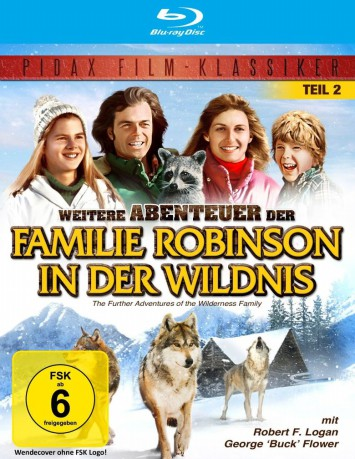

gesehen am 21.11.2016
gesehen am 21.11.2016Alternativ: The Further Adventures of the Wilderness Family gesehen am 21.11.2016
 
 IMDB-Wertung: 6.5 / 10
IMDB-Wertung: 6.5 / 10  Metascore:
Metascore: 
Auf Skip, Pat, Jenny und Toby warten neue Abenteuer in der Wildnis: der Winter ist über die friedliche Landschaft in den Rocky Mountains hereingebrochen und stellt die Robinsons vor ganz neue Probleme. Wölfe nähern sich dem Blockhaus und ein unbekanntes Tier reißt nachts ihre Hühner. Aber nicht genug\r damit, auch der gesamte Fleischvorrat wird durch den nächtlichen Vielfraß ungenießbar. Um in der unwegsamen Landschaft überleben zu können, müssen Skip und Toby aufbrechen, um sich Nahrung zu besorgen. Die Jagd bleibt aber nicht die einzige Herausforderung, denn bald tauchen die Wölfe erneut auf\r und jagen Toby auf einen See, wo dieser im Eis einbricht und erst in letzter Sekunde gerettet werden kann. Nach all den Aufregungen hoffen die Robinsons, wenigstens das Weihnachtsfest geruhsam verbringen zu können ...
Jahr: 1978
Dauer: 105 Minuten
FSK: 6
Land: USA Studio: Hermes Video ProductionTonspuren: DD2.0 - ,
Untertitel:
Auflösung: 1080p (1440x1080) Größe: 7116 MB
Regisseur: Frank Zuniga
Drehbuch: Paul Mayersberg
Soundtrack:
Darsteller:
 George 'Buck' Flower als Boomer
George 'Buck' Flower als BoomerDatei: X:\Kinder Collections\Familie Robinson\Weitere Abenteuer der Familie Robinson in der Wildnis (1978, FSK6, 1440x1080).mkv seit 18.11.2016
Festplatte: Kinder-Filme+Trick
 Alle Filme aus Gruppe 'Kinder Collections\Familie Robinson'
Alle Filme aus Gruppe 'Kinder Collections\Familie Robinson'